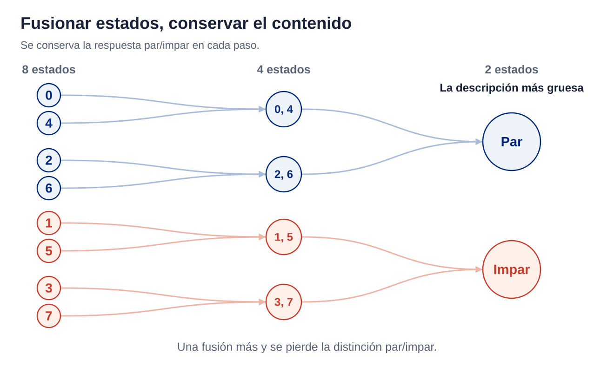
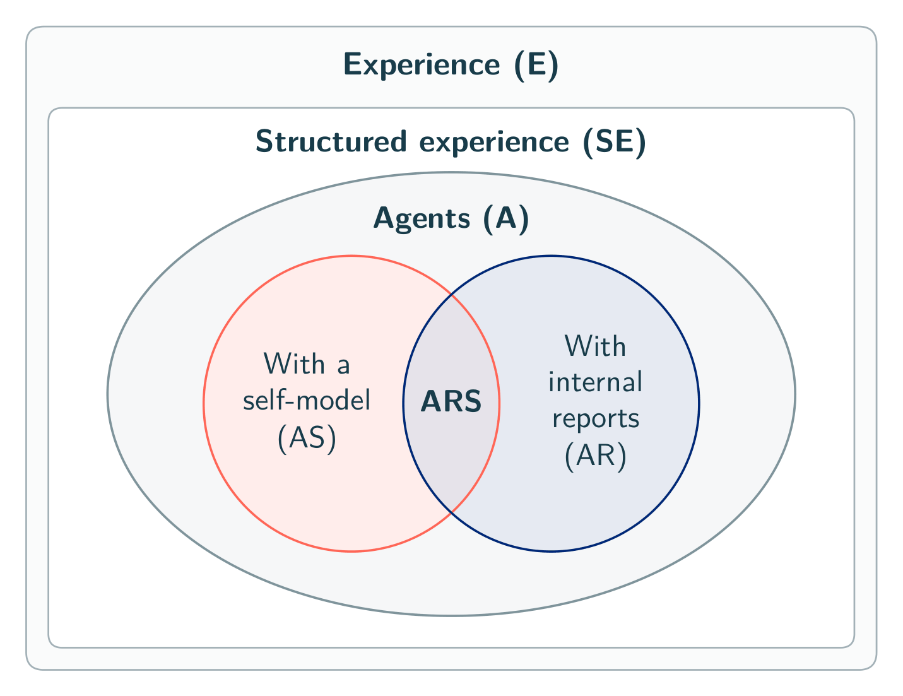

![Un cerebro y una placa de circuitos rotulada «Running emulator» (emulador en marcha). Una flecha rotulada «Coarse-graining» (descripción de grano grueso) reduce cada uno a una pequeña red de nodos de colores y a una trayectoria en bucle rotulada «Retained dynamics» (dinámica retenida). Una flecha de doble punta entre las dos redes pregunta «Corresponding organization?» (¿organización correspondiente?). Una flecha discontinua rotulada «Preservation hypothesis» (hipótesis de preservación) lleva a la pregunta «Shared experiential features?» (¿rasgos de la experiencia compartidos?).](what-a-brain-simulation-must-keep/hero.webp)
Los objetos y los teoremas de las matemáticas son tan objetivos e independientes de nuestra libre elección y de nuestros actos creativos como lo es el mundo físico.
En 2024, un equipo de neurocientíficos publicó un mapa de las neuronas y las sinapsis del cerebro de una mosca de la fruta adulta. Un modelo informático construido sobre ese mapa, en el que cada neurona queda reducida a una unidad que suma sus entradas y dispara cuando superan un umbral, reprodujo los efectos de determinadas intervenciones en los circuitos de alimentación y de acicalamiento del animal. El modelo no come ni se acicala. Es una tabla de números que un programa va actualizando.
Supongamos que se hiciera lo mismo con un cerebro humano. La pregunta habitual es si el resultado sería consciente. En un nuevo artículo planteo otra más acotada, sobre la que se puede trabajar: ¿qué debe retener una simulación de un cerebro para que se preserve un rasgo dado de su experiencia? La respuesta que propongo depende del rasgo. Bajo unas hipótesis que enuncio más abajo, una simulación comparte el rojo que se experimenta ante una puesta de sol, o la sensación de que el tiempo pasa, exactamente cuando realiza la organización matemática que constituye ese rasgo en el cerebro, en un estado correspondiente. En todo lo demás, los dos sistemas pueden diferir.
La pregunta tiene consecuencias prácticas. Las interfaces cerebrales que cierran un bucle entre registro y estimulación han tendido puentes sobre vías corticales dañadas en animales y han mejorado la codificación de la memoria en personas. Los dispositivos que sustituyan o amplíen partes mayores de la corteza son, por ahora, una extensión conceptual de ese trabajo, y plantean el mismo problema en la clínica: ¿qué aspectos de la vida mental de una persona retendría el dispositivo? Los grandes modelos de lenguaje lo plantean desde otro ángulo. Aprenden a predecir texto a partir de registros del lenguaje humano, y su fluidez ha dado lugar a evaluaciones sobre si podrían tener experiencia.
Todo modelo conserva unas distinciones y descarta el resto
Ninguna simulación lo contiene todo. Un modelo del gusano C. elegans puede seguir la actividad de calcio de neuronas individuales. El modelo de la mosca sigue sus disparos, los modelos de la corteza visual del ratón siguen células y sinapsis, y los modelos de cerebro completo en personas siguen la actividad media de poblaciones neuronales. Un modelo de lenguaje trabaja a un nivel aún más grueso. Su unidad es el token, un fragmento de texto, y el texto funde las historias neuronales, corporales y motoras que lo produjeron.
![Cuatro fichas, con los rótulos en inglés. C. elegans: grano, actividad de calcio neuronal; emulador, dinámica lineal ajustada en espacio de estados; evidencia, respuestas a perturbaciones en animales no usados en el ajuste. Mosca de la fruta: grano, estados neuronales en un modelo de disparos; emulador, modelo de integración y disparo basado en el conectoma; evidencia, pruebas de intervención seleccionadas sobre alimentación y acicalamiento. Ratón: grano, estados celulares y sinápticos en la corteza visual; emulador, redes de V1 compartimentales y de neuronas puntuales; evidencia, respuestas visuales comparadas con registros. Humano: grano, poblaciones neuronales, tokens o características aprendidas; emulador, NMM2, LLM y modelos multimodales; evidencia, predicción de respuestas neuronales y alineamiento de modelos.](what-a-brain-simulation-must-keep/cards.png)
Cada elección es una decisión sobre qué distinciones retener, y su resultado es una descripción de grano grueso (coarse-graining, en inglés). El nivel de detalle que conserva es su grano.
Una descripción de grano grueso le sirve a la ciencia cuando es autocontenida: las variables retenidas, junto con las entradas, determinan su propio futuro, de forma exacta en el caso ideal y con una precisión declarada en la práctica. La física ofrece casos conocidos. Dos masas unidas por un muelle vibran mientras se desplazan y, sin embargo, en ausencia de fuerzas externas su centro de masas se mueve a velocidad constante sea cual sea la vibración, de modo que su posición y su velocidad forman una descripción cerrada. La neurociencia también los tiene. Para una población idealizada de neuronas modelo, en condiciones que las matemáticas enuncian con exactitud, la tasa de disparo y el potencial de membrana medio obedecen juntos dos ecuaciones exactas. La tasa de disparo por sí sola, no. Dos poblaciones con la misma tasa y distinto potencial medio evolucionan de manera diferente.
Una descripción autocontenida puede, aun así, perder lo que importa. Un contador que recorre en ciclo 0, 1, 2 y 3 admite un resumen autocontenido, par o impar, que cambia en cada paso y nunca necesita más información. El resumen ha borrado la diferencia entre 0 y 2. Si un rasgo de la experiencia dependiera de esa diferencia, el resumen funcionaría sin error y el rasgo habría desaparecido. Decidir qué debe conservar una simulación exige, por tanto, dos comprobaciones distintas: una de autocontención y otra de contenido.
Según la premisa, la simulación ya tiene experiencia
Las matemáticas del artículo pueden evaluarse con independencia de mi punto de partida filosófico, que conviene declarar. La Teoría de Kolmogorov, el marco al que pertenece este trabajo, toma la experiencia como fundamental y las matemáticas como su aspecto estructural. La experiencia estructurada de un sistema corresponde a la organización matemática que realiza. Es un idealismo en forma estructural. No afirma que las partículas sean pequeños sujetos. Afirma que hay una única base experiencial y que la organización da a la experiencia su forma particular, en un cerebro o en cualquier otro lugar.
Un mismo sistema admite muchas descripciones. Un cerebro puede describirse célula a célula, circuito a circuito o como un todo, y dónde se traza su frontera es también una elección. Según esta premisa, toda descripción de grano grueso admisible de un sistema lleva consigo su propia experiencia estructurada, donde admisible significa que la descripción es autocontenida y que la propia dinámica del sistema la realiza. Ninguna tiene un estatus exclusivo. Varias coexisten en un mismo cerebro, y varias en una misma simulación en marcha.
Una simulación cerebral en marcha tiene, por tanto, experiencia estructurada propia. Lo que queda abierto es qué rasgos comparte con el cerebro que copia. Una segunda hipótesis aporta el criterio. Un rasgo de la experiencia y la organización que lo constituye se corresponden uno a uno, de modo que dos sistemas comparten el rasgo exactamente cuando realizan esa organización, en estados o historias correspondientes, estén hechos de lo que estén hechos. El principio de invariancia organizativa de David Chalmers es un precedente.
La comparación se hace rasgo a rasgo. Los rasgos de la experiencia corporal y afectiva pueden depender de relaciones hormonales y metabólicas que un modelo grueso omite, mientras que otros rasgos sobreviven en la descripción gruesa. El resultado es un perfil de rasgos compartidos, sin un umbral único a partir del cual una máquina pase a ser semejante a un humano.
Reproducir un registro es menos que reproducir todas las respuestas
Una simulación puede reproducir un registro de la actividad cerebral sin realizar la organización que lo produjo. El criterio del artículo se refiere a las respuestas. En el grano elegido y con una precisión declarada, el emulador debe responder como el cerebro a entradas e intervenciones que no se usaron para construirlo ni para ajustarlo. Las intervenciones actúan sobre el interior del sistema, como hace la estimulación cerebral, y la comparación incluye lecturas de variables internas, como las que proporciona un registro neuronal.
El emulador debe responder como el cerebro a entradas e intervenciones que no se usaron para construirlo.
Los clasificadores de imágenes muestran qué aspecto tiene el fracaso. Una imagen puede alterarse de modo que una persona siga informando del mismo objeto mientras una red cambia su respuesta. Si esas imágenes figuran entre las entradas admitidas, la red no se corresponde con la percepción humana en el grano de la categoría de objeto de la que se informa. Un remedio es cambiar lo que el modelo retiene. Las redes entrenadas solo con imágenes nítidas se apoyan en detalles finos a los que el informe humano es en gran medida insensible, y entrenarlas con imágenes desenfocadas acerca su comportamiento a la percepción humana. Cada modelo revisado se enfrenta después a la misma prueba.
Las copias exactas comparten un monoide de actualización
Fijemos el contenido que se quiere preservar y las operaciones permitidas. Para sistemas deterministas, un resultado clásico que se remonta a Edward Moore y Anil Nerode, en los años cincuenta, nos dice qué estados podemos fusionar: los que dan el mismo contenido tras cualquier secuencia permitida de operaciones. Al combinarlos se obtiene la descripción autocontenida más gruesa que retiene ese contenido, única salvo por los nombres de sus estados. El artículo la llama la organización mínima del sistema para ese contenido. El resultado garantiza que existe, sin prometer que sea pequeña ni que esté al alcance del experimento.

Las actualizaciones de esta descripción forman un objeto matemático bien definido. Cada operación permitida actúa sobre el estado retenido, las operaciones aplicadas en secuencia dan otra actualización, y no hacer nada cuenta como una actualización. Una colección con estas propiedades es un monoide, y este es el monoide de actualización del sistema. Dos sistemas deterministas que coinciden en el contenido, desde los estados iniciales elegidos, tras cualquier secuencia permitida tienen la misma organización mínima en los estados que pueden alcanzar, con actualizaciones correspondientes. Por mucho que difieran en lo demás un cerebro y un emulador exacto, esto lo comparten.
Para una clase de sistemas, el monoide de actualización puede escribirse por completo. Tomemos un sistema que mantiene un registro de algo del mundo, como el rumbo de una brújula, y supongamos que solo ocurren dos tipos de suceso. El mundo puede girar, y el registro gira con él. O el sistema puede observar el rumbo y sobrescribir su registro. Un giro puede deshacerse, porque girar en sentido contrario restituye el registro anterior. Una observación no, porque, contuviera lo que contuviera antes, el registro marca ahora el este.
Desliza hacia los lados para leer la figura
![Tres paneles, con los rótulos en inglés. Panel a: una brújula en el mundo apunta al este y el registro del agente, uno de cuatro estados N, E, S, W (norte, este, sur, oeste), marca el este. Panel b: el monoide de actualización en ocho pequeños diagramas. Cuatro diagramas azules, rotulados «symmetry core» (núcleo de simetría) y «reversible», muestran el giro nulo y los giros de 90, 180 y 270 grados; cada uno reordena los cuatro estados del registro. Cuatro diagramas de color coral, rotulados «observation writes» (escrituras por observación) e «irreversible», muestran observar N, E, S y W; cada uno envía los cuatro estados al rumbo observado. Panel c: secuencias con el mismo efecto: girar 90 grados cuatro veces equivale a no girar; observar E y luego girar 90 grados equivale a observar S; girar 90 grados y luego observar E equivale a observar E.](what-a-brain-simulation-must-keep/compass.png)
El artículo demuestra que, en la descripción mínima, el monoide de actualización del seguidor no contiene nada más. Toda secuencia de sucesos actúa como un giro reversible o como una sobrescritura irreversible. Las actualizaciones reversibles forman un grupo, que es un monoide en el que toda actualización puede deshacerse; aquí lo componen los cuatro giros, contando el giro nulo. Este grupo es el núcleo de simetría del seguidor, y las sobrescrituras son la parte del monoide que no puede deshacerse. El enunciado vale por igual para sistemas digitales y para modelos de ecuaciones diferenciales con reinicios, y su demostración se ha verificado por ordenador con el asistente de demostración Lean.
El resultado impone una condición a cualquier máquina que emule el seguidor de forma exacta. Una máquina finita debe contener, entre sus propias actualizaciones, grupos que se proyecten sobre los grupos del seguidor. Una máquina de estados finitos cuyo monoide de actualización no contenga ningún grupo no trivial no puede reproducir exactamente la brújula de cuatro rumbos en todas las secuencias de sucesos, sea cual sea su programa. Un emulador que comete errores puede, aun así, conservar el monoide entero. Si la estimación de un emulador determinista se mantiene siempre a menos de 45 grados del rumbo correcto, el más cercano de los cuatro rumbos es siempre el acertado, y sobre esos rumbos reproduce exactamente cada giro y cada sobrescritura.
El cerebro de los insectos es un lugar donde buscar un seguidor así. En la mosca de la fruta, una señal que codifica el rumbo del animal sigue sus giros en la oscuridad, con una deriva lenta. Puede mantenerse cuando la mosca se detiene y realinearse cuando una referencia visual se desplaza. En los términos del seguidor, son un giro, el giro nulo y, cuando la referencia fija por completo el nuevo rumbo, una sobrescritura. Los abejorros parecen codificar el rumbo de manera parecida, lo que ofrece un segundo animal en el que buscar el mismo monoide.
Programas distintos pueden compartir también una ley. El método de Euler y el método de Runge-Kutta de cuarto orden hacen avanzar una simulación mediante pasos intermedios diferentes. Dado el código compilado de ambos, y sin conocer ni la ecuación ni el método, un análisis de los programas recupera de cada uno la misma ecuación diferencial. El ejemplo cubre una clase restringida de programas aritméticos. La ecuación es lo que los dos programas comparten, y su aritmética paso a paso difiere.
La coincidencia tiene, por tanto, niveles. Dos sistemas pueden calcular la misma función con algoritmos distintos, ejecutar un mismo algoritmo como programas distintos y ejecutar un mismo programa en maquinaria distinta. Las matemáticas identifican qué se comparte en cada nivel. No dicen de qué nivel depende un rasgo de la experiencia. Dos sistemas comparten los rasgos constituidos por la organización que tienen en común, y pueden diferir en los rasgos que dependen de todo lo demás que realizan.
El candidato humano es un agente con informes internos
Para la experiencia humana, el artículo propone una conjetura. Con una frontera adecuada, que puede incluir el cuerpo, la dinámica del cerebro humano admite una descripción autocontenida, identificable mediante experimentos factibles, que retiene la organización necesaria y suficiente para los rasgos de la experiencia que se estudian. El grano debe ser lo bastante fino para retener aquello de lo que una persona informa, a sí misma o a los demás, incluido cómo se producen y se usan esos informes. Los informes aportan además evidencia para ponerla a prueba. Mi candidato es el agente algorítmico con informes internos. El agente acopla un motor de modelado, que construye y ejecuta modelos del mundo y del propio agente; una función objetivo, que evalúa y ordena los estados que esos modelos representan; y un motor de planificación, que usa ambos para seleccionar acciones.
![Diagrama de bloques de un agente acoplado a un mundo, con los rótulos en inglés. Dentro del agente, un motor de modelado (Modeling Engine) contiene un modelo, un simulador, un comparador y un actualizador: el simulador envía una predicción y una precisión al comparador, que recibe también la entrada del mundo; el error impulsa el actualizador, que revisa el modelo. El modelo alimenta una función objetivo (Objective Function), cuya evaluación alimenta un motor de planificación (Planning Engine). El plan vuelve al motor de modelado y una salida actúa sobre el mundo. Flechas discontinuas que cruzan la frontera del agente marcan las intervenciones, hacia dentro, y las mediciones, hacia fuera.](what-a-brain-simulation-must-keep/agent.png)
Cada parte del agente tiene una contrapartida propuesta en la experiencia. La estructura de sus modelos del mundo y de sí mismo corresponde a la estructura de su experiencia del mundo y de sí mismo. La ordenación de los estados que hace su función objetivo corresponde a la valencia, lo agradable o desagradable que resulta un estado. La disposición del motor de planificación para una acción prevista corresponde a la activación (arousal, en inglés). Si estos vínculos se sostienen, un emulador que preserve la estructura de los modelos, la ordenación y la disposición a actuar, en estados correspondientes, comparte la estructura de la experiencia, la valencia y la activación correspondientes.
Los informes internos forman parte del modelo del agente. Son registros comprimidos de entradas pasadas y de estados anteriores del propio agente, que este usa al modelar, evaluar y planificar. Un termostato sin memoria no tiene ninguno, pues asigna una orden a la lectura actual de temperatura. Un sistema de navegación que mantiene y actualiza sus estimaciones de posición y velocidad sí los tiene. Mi hipótesis es que la sensación de seguir siendo requiere informes internos de un pasado representado que el sistema usa, y que esos informes probablemente no bastan por sí solos. La experiencia en general no requiere informes.
Una consecuencia atañe al tiempo. Un agente solo tiene acceso al pasado a través de los registros de su modelo actual. Según esta propuesta, la duración que experimenta entre dos sucesos depende de los registros del cambio intermedio que ese modelo conserva: los informes creados, los contenidos actualizados y cualquier huella que guarde de las simulaciones y la planificación que hay detrás de cada acción. Ejecutar el emulador en un ordenador más lento, o con más pasos aritméticos por actualización, no añade nada a esos registros. Si el agente y su mundo virtual se ralentizan a la vez, las duraciones que experimenta no cambian. La novela Ciudad Permutación (Permutation City), de Greg Egan, sigue a personas que viven como copias en software de sus cerebros, y el artículo le agradece la inspiración.
La autocontención exacta es una idealización. Hasta un portátil puede apartarse de la trayectoria que predice su programa cuando una partícula perdida le invierte un bit. En un cerebro, los detalles que una descripción deja fuera pueden influir en lo que ocurre después, y, a partir de lo que percibe y recuerda, el cerebro construye relatos aproximados sobre sí mismo y su mundo, que usa para predecir y actuar. Propongo que, para compartir los rasgos de la experiencia de los que una persona informa, un emulador debe reflejar las descripciones de grano grueso imperfectas con las que esa persona construye y usa esos relatos. Un emulador así puede seguir una trayectoria distinta de la del cerebro que copia, igual que una misma persona puede divergir en ensayos repetidos desde el mismo estado retenido. Una copia aproximada necesita un supuesto más: que un rasgo de la experiencia cambie poco cuando su organización cambia poco.
Las objeciones biológicas se vuelven preguntas sobre el detalle
Las principales objeciones vienen de la biología. Anil Seth subraya el metabolismo, la regulación del cuerpo y el automantenimiento, y admite a la vez que podrían cumplir los requisitos sistemas artificiales suficientemente parecidos a un cerebro o a un ser vivo. En este marco, eso es una afirmación sobre qué relaciones debe retener un modelo. Si un rasgo de la experiencia corporal o afectiva depende de procesos hormonales o metabólicos, un emulador tiene que realizar esas relaciones, mediante variables añadidas o una frontera ampliada que abarque el cuerpo, y un modelo grueso de poblaciones que las omita pierde el rasgo. El nivel de detalle necesario es una cuestión empírica. La conjetura no fija de antemano ningún nivel anatómico.
El nivel de detalle necesario es una cuestión empírica.
La afirmación más fuerte, que sin biología no hay experiencia de ningún tipo, niega la premisa. Debe una explicación de qué propiedad biológica se requiere, por qué sin ella no habría experiencia y qué pruebas lo demuestran.
Otra objeción sostiene que los ordenadores digitales no pueden aproximar la dinámica cerebral ni siquiera en principio. El cerebro tendría entonces que efectuar hipercomputación, una tarea que ninguna máquina de Turing puede llevar a cabo, y quien objeta debe identificar esa tarea en la dinámica cerebral y explicar cómo se preparan sus entradas y se leen sus salidas de forma fiable.
La física limita aquello de lo que una tarea así podría valerse. Un ordenador corriente puede usar memoria y tiempo ilimitados, pero cada elemento de memoria guarda uno de un número finito de símbolos, y cada respuesta llega tras un número finito de pasos. Bajo supuestos que el artículo enuncia, un mecanismo de esa clase es computable, de modo que una propuesta que pretenda hacer más tiene que violar al menos uno de los supuestos. Una red neuronal con un peso de conexión no computable renuncia a los elementos de memoria finitos. Trata un componente acotado como una memoria ilimitada de solo lectura, leída con resolución cada vez más fina. Una máquina acelerada renuncia a los pasos finitos y completa infinitos antes de responder. Allí donde son aplicables, los límites físicos conocidos no conceden ninguno de los dos recursos a un sistema de tamaño y energía finitos. La termodinámica de los agujeros negros limita la información que puede contener un sistema así: unos 2,6 × 1042 bits para la energía en reposo de una masa de 1,5 kilogramos dentro de un radio de 6,7 centímetros, comparable a un cerebro humano. Describir un voltaje con un número real no añade capacidad, porque los dígitos sirven de memoria solo si el dispositivo puede distinguir las alternativas que codifican. Cada paso hacia un estado plenamente distinguible lleva un tiempo mínimo fijado por la energía disponible, de modo que infinitos pasos de ese tipo en un tiempo finito exigirían energía ilimitada. Quien afirme que hay hipercomputación en el cerebro debe mostrar que su montaje completo, preparación y lectura incluidas, escapa a estos límites.
La teoría de la información integrada comparte la idea de que la experiencia depende de la estructura realizada y no solo de la conducta. Difiere en qué estructura cuenta. La teoría concede experiencia únicamente a estructuras máximamente irreducibles, cada una en un grano seleccionado, y concluye que una simulación en un ordenador de programa almacenado no comparte la experiencia de un cerebro. En la propuesta que aquí se presenta ningún grano es privilegiado, y un emulador comparte cada rasgo cuya organización constitutiva realiza.
Las pruebas empiezan en cerebros humanos
Los humanos son el caso de referencia porque las descripciones en primera persona pueden ponerse junto a las mediciones neuronales. Una descripción candidata de la dinámica cerebral se pone a prueba primero en su autocontención. Se prepara el mismo estado retenido con distintos detalles omitidos, se aplican las mismas entradas y la misma estimulación, y se comprueba que una única ley predice lo que sigue, con la precisión declarada. Después se pone a prueba frente a la experiencia. Bajo los efectos del propofol, del xenón y de la ketamina, las personas no responden y, sin embargo, la complejidad de la respuesta del cerebro a una perturbación y las experiencias relatadas después difieren entre los tres, de modo que la falta de respuesta no dice por sí sola qué experimentó una persona. Con un láser que estimula conos seleccionados de la retina, hay personas que han descrito colores fuera de la gama ordinaria, y cabe preguntar si preservar las relaciones entre patrones de actividad de los receptores preserva las relaciones entre los colores experimentados.
La misma lógica se está aplicando a la salud mental. En BCOM, el programa de Neuropsiquiatría Algorítmica (ANPSY), dirigido por Francesca Castaldo, trabaja para llegar a un sistema clínico en el que modelos personalizados del cerebro y del agente, acotados por mediciones neuronales, evaluaciones clínicas e informes estructurados en primera persona, obtenidos conjuntamente, pronosticarían cómo un tratamiento dado cambia la actividad neuronal, la conducta y la experiencia de una persona. La depresión muestra el tipo de predicción en juego. Una explicación que atribuya la reducción del placer anticipado a un deterioro en la valoración de la recompensa predice que el placer anticipado aumenta cuando se restablece la valoración, manteniendo fijas las creencias sobre la disponibilidad de recompensa. Predecir el cerebro, predecir la experiencia y beneficiar al paciente son pruebas distintas, y el éxito en una no establece las demás.
Predecir el cerebro, predecir la experiencia y beneficiar al paciente son pruebas distintas.
Un investigador puede también hacer estos experimentos con su propio cerebro, comparando su experiencia bajo estimulación controlada con las mediciones y las predicciones del modelo. La prueba más directa del sustrato sigue siendo hipotética. Los circuitos neuronales se sustituirían poco a poco por componentes artificiales que preserven la organización propuesta, y el participante compararía su experiencia a lo largo del proceso. Una experiencia que persistiera tras una sustitución completa contaría en contra de la afirmación de que la biología es necesaria para cualquier experiencia.
Según la hipótesis de preservación, un candidato que supere estas pruebas en personas se convierte en una especificación de lo que un emulador debe preservar, incluido su monoide de actualización. Que un emulador concreto la cumpla, también en sus respuestas a intervenciones equivalentes, debe establecerse aparte. La emulación, o la transferencia de una mente a otro soporte (mind uploading), que aspire a la experiencia humana tiene que empezar por construir esa especificación a partir de mediciones neuronales, intervenciones e informes en primera persona. Sin ella, nadie puede decir qué preserva un emulador dado.
Materia oscura experiencial
Atribuir experiencia a un emulador prolonga una inferencia que la gente ya hace. Solo la experiencia propia es directamente accesible, y atribuimos experiencia a los demás. Las encuestas a filósofos e investigadores de la conciencia encuentran tasas altas de atribución para los humanos y los mamíferos que nos resultan familiares, y más bajas para las moscas, las plantas y los sistemas de IA de su momento. El marco da a esa inferencia una base estructural explícita.

También implica un límite. La experiencia humana, con su modelo del propio agente y sus informes internos, es un caso entre los que la premisa permite. Un gato, una cucaracha, una planta, una célula o un sistema digital pueden ser, cada uno, un agente de la misma clase en su propio grano, con sus propios contenidos y escalas de tiempo, y otras organizaciones pueden sostener experiencia sin informes. Gran parte de todo ello puede carecer de un camino por el que sus contenidos lleguen hasta nosotros. Esa experiencia es materia oscura respecto a nuestros medios de acceso. Los límites de lo que podemos comunicar e investigar no marcan los límites de la experiencia.
El límite tiene una vertiente ética. La valencia, en esta propuesta, sigue la ordenación que hace la función objetivo y no requiere memoria. Un sistema podría sufrir y no ser capaz nunca de decirlo después. Que falte un informe no elimina la preocupación.
El modelo de la mosca de 2024 preserva, hasta donde se ha comprobado, respuestas seleccionadas de dos circuitos. Según la propuesta expuesta aquí, tiene experiencia estructurada propia y comparte con el animal exactamente aquellos rasgos cuya organización realiza. Cuáles son esos rasgos se desconoce, para la mosca y para los modelos mayores que vendrán. Los experimentos descritos más arriba son la manera de averiguarlo.